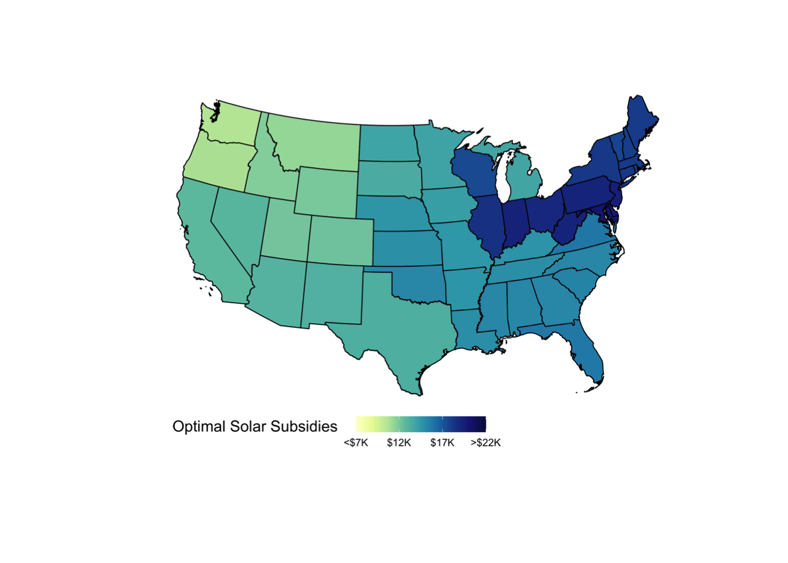
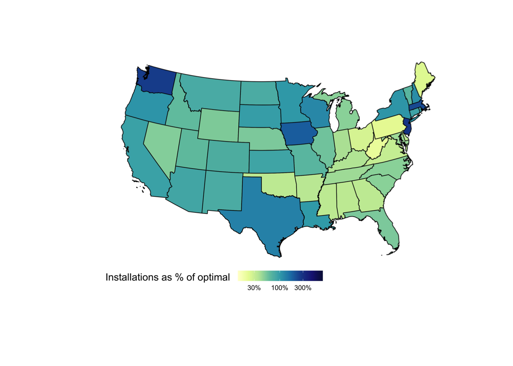

Below are some of the projects that I am working on currently.
Regional Science and Urban Economics, 2023
State income taxes affect federal income tax revenue by shifting the spatial distribution of households between high- and low-productivity states, thereby changing household incomes and tax payments. We derive an expression for these fiscal externalities of state taxes in terms of estimable statistics. An empirical quantification using American Community Survey data reveals that the externalities range from large and negative in some states, to large and positive in others. In California, an increase in the state income tax rate and the resulting change in the distribution of households across states lead to a decrease in federal income tax revenue of 39 cents for every dollar of California tax revenue raised. The externality amounts to a 0.27% decrease in total federal income tax revenue for a 1 pp increase in California’s state tax rate. Our results raise the possibility that state taxes may be set too high in high-productivity states, and set too low in low-productivity states.
We study the spatial misallocation resulting from subsidies for residential solar panels in the US and quantify the associated environmental costs. We build a structural model of solar panel demand and electricity production across the country and estimate the model by combining 1) remotely sensed data on residential solar panels, 2) power-plant-level data on hourly production and emissions, and 3) a state-of-the-art air pollution model. The current subsidies lead to severe spatial misallocation. The optimal cost-neutral reform generates environmental benefits equal to those of a 6-11% increase in the productivity of residential solar panels nationally.

The advent of genetically modified (GM) crops quickly led to the widespread use of glyphosate within U.S. agriculture. Since glyphosate’s introduction in 1974, policy-makers have debated its effects on human health. However, the scientific literature offers few generalizable studies on this significant technological innovation. Prior research has focused on lab studies on animals or epidemiologic studies of groups with high occupational exposure. Instead, we focus on the population at large. The general population could face exposure to glyphosate through water (runoff) or air (drift). To identify the causal effect of glyphosate exposure on health, we leverage (1) county-level variation in glyphosate use driven by (2) the timing of the release of GM technology for different crops and (3) differential suitability for these crops. Our results for runoff-driven exposure offer an additional dimension—comparing the effects of upstream pesticide applications to the placebo of downstream applications. Our early results suggest that glyphosate has a significant, negative effect on birth weight (in the same county and year), while upstream glyphosate does not affect birth weights. These estimates are likely lower bounds of the actual health consequences of glyphosate, as they are net of health benefits from reduced exposure to other pesticides (and decreased tillage). In addition to estimating the causal effects of glyphosate exposure on the general population, we contribute to a broader discussion on the efficiency and equity of environmental regulation and the challenges of evaluating these regulations.